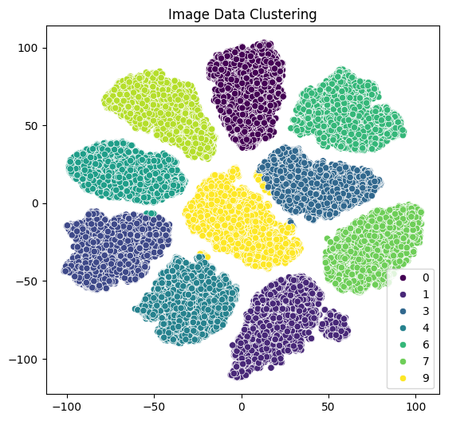
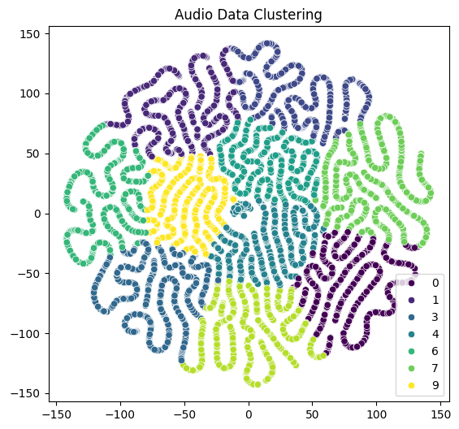

In this project, I explored a novel approach to classify handwritten digits by combining image and audio data. I expanded the traditional MNIST dataset with spoken audio recordings of the digits, creating a rich dataset that allows for multimodal learning. Using a combination of Convolutional Neural Networks (CNN) and Multilayer Perceptrons (MLP) implemented in PyTorch, my model learned to make predictions from both visual and auditory inputs.
Handwritten digit recognition is a critical task in various industries such as banking, postal services, healthcare, and document analysis. While significant advancements have been made in the visual recognition of digits, adding audio data can enhance the prediction accuracy by providing additional context. In this project, I combined both images and audio to improve the recognition accuracy.
To achieve this, I processed the MNIST dataset along with corresponding spoken digit recordings. The image data was normalized, and the audio data was prepared for input into the model. I then split the dataset into training and validation sets to ensure robust model evaluation.
The image data underwent min-max normalization to ensure consistency and aid in convergence during model training. The audio data was directly cast to a float32 format suitable for PyTorch.
I trained the model for 10 epochs using cross-entropy loss and the Adam optimizer with a learning rate of 0.001. Training was conducted on a GPU to leverage faster computation. The best validation accuracy was tracked to save the optimal model weights.
No extensive hyperparameter tuning was performed, as the initial settings provided satisfactory results.
The combined multimodal model achieved an impressive accuracy of 99.18% on the test set. This highlights the effectiveness of integrating audio data into the digit recognition task. The following figures illustrate the clustering of the image and audio data.

Figure 1: Image data clustering shows distinct clusters for each digit class.

Figure 2: Audio data clustering displays some overlap, indicating challenges in learning distinctive audio features.
My multimodal CNN and MLP model demonstrates the advantages of combining visual and audio data for handwritten digit recognition. Despite achieving high accuracy, the audio model's clustering revealed room for improvement, likely due to variances in audio data such as different accents and noise. Future work could focus on refining the audio processing pipeline to enhance performance further.